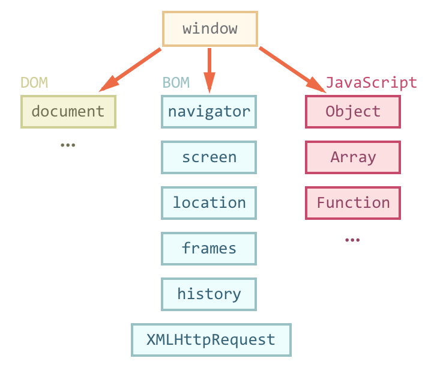
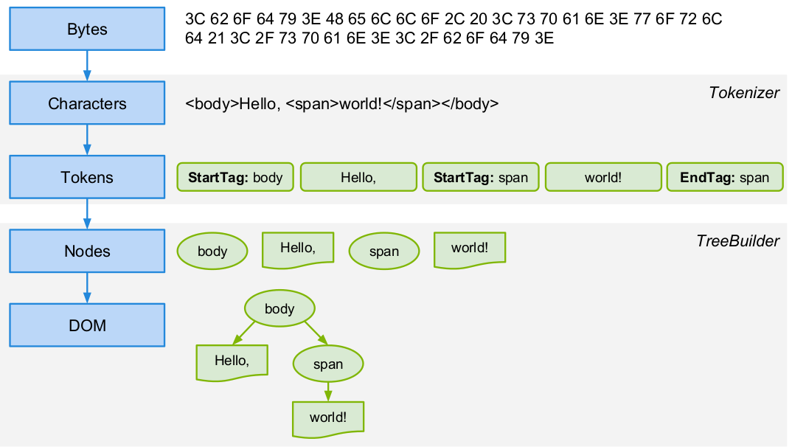
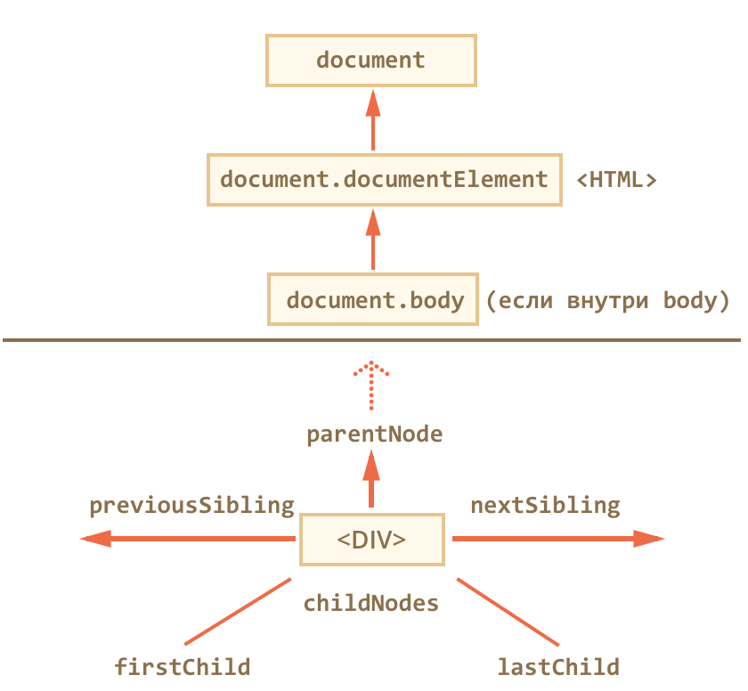
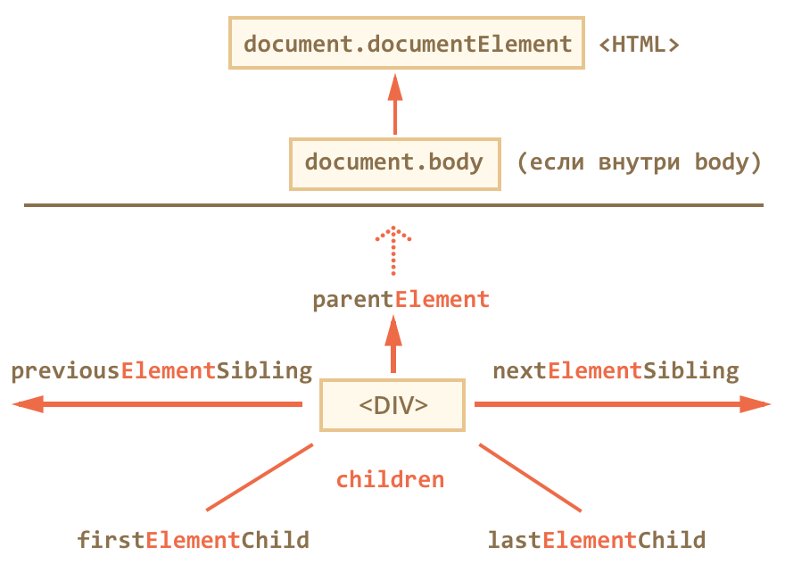
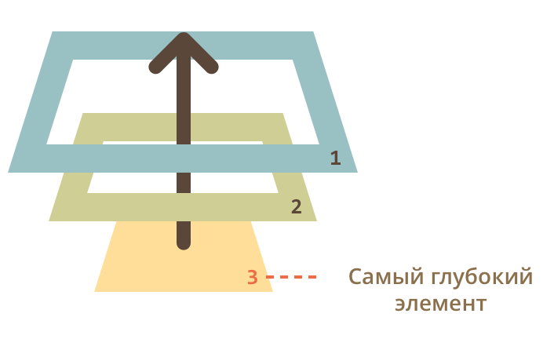

DOM API и события
Дьяченко Михаил
Проблемы с браузером
- Функциональность отличается у разных браузеров
- Мы не выбираем браузер пользователя
- Мы не выбираем версию браузера
- Мы не можем менять настройки пользователя
- Полифил – если реализации нет в браузере, то добавляем эту реализацию сами
- Проверяйте здесь: caniuse.com
Полифил
if (!Element.prototype.closest) {
Element.prototype.closest = function() {
// Пишем реализацию полифила
};
}
Javascript
&Browser
window

window – глобальный объект
window.document === document; // true Browser Object Model (BOM)
- Объект navigator: информация о самом браузере
- Объект location: адресная строка и переходы по урлу
- Объект history: история переходов и переходы по истории
- Объект screen: информация об экране пользователя
- Функции alert/prompt/confirm
Document Object Model (DOM)
HTML
<!DOCTYPE html>
<html>
<head>
<title>CERN</title>
</head>
<body>
CERN
is a European research organization
</body>
</html>

Типы узлов
- В DOM 12 типов узлов, но мы работаем с 4
- Документ – объект document
- Элементы – теги
- Текст
- Комментарии
- Другие
Поиск элементов
document.getElementById('id')
- Ищет элемент с заданным идентификатором
- Возращает первый найденный элемент
- Возращает null, если элемент с указанным ID не найден в документе
document.getElementById('id')
Hello everybody!
var elem = document.getElementById('hello');
getElementsByClassName('class')
- Ищет элементы с соответствующим классом
- Есть не только у document, но и у любого элемента
- Возращает коллекцию
getElementsByClassName('class')
Hello everybody!
Aloha
Привет
var elems = document.getElementsByClassName('greeting'); // 3 элемента
var parent = document.getElementsByClassName('hello')[0];
var elems = parent.getElementsByClassName('greeting'); // 2 элемента
Коллекция – array-like object
- Можно итерировать
- Не стоит использовать for..in – будут лишние ключи
- Это не массив: нет привычных методов map, filter, reduce и т.д.
// преобразование в массив
var elems = document.getElementsByClassName('hello');
var elemsArray = Array.prototype.slice.call(elems);
var elemsArrayES6 = Array.from(elems); // > ES6
getElementsByTagName('tag')
- Ищет элементы соответствующего тега
- Есть не только у document, но и у любого элемента
- Возращает коллекцию
getElementsByTagName('tag')
Hello everybody!
Aloha
Good bye
var elems = document.getElementsByTagName('span'); // 3 элемента
var parent = document.getElementsByTagName('div')[0];
var elems = parent.getElementsByTagName('span'); // 2 элемента
querySelectorAll('selector')
- Возвращает коллекцию по заданному CSS селектору
- Псевдоселекторы тоже работают(:hover, :first-child, и т.д.)
- При невалидном селекторе выбрасывает исключение SYNTAX_ERR
querySelectorAll('selector')
Hello everybody!
Aloha
Goodbye
Aloha
document.querySelectorAll('.container div:first-child');
// NodeList [ Hello everybody!, Goodbye ]
querySelector(selector)
- Возвращает первый найденный элемент по заданному селектору
- Выбрасывает исключение SYNTAX_ERR в случае передачи невалидного селектора
querySelector('selector')
Goodbye
Hello everybody!
Aloha
document.querySelector('.greeting');
// Goodbye
document.querySelector('.container .greeting');
// Hello everybody!
closest(selector)
- Возвращает ближайший родительский элемент (или сам элемент), который соответствует заданному CSS-селектору
- Возращает null, если нет элемента, который соответствует селектору
- При невалидном селекторе выбрасывает исключение SYNTAX_ERR
- Не доступен в IE и старых версиях браузеров
closest(selector)
var div = document.querySelector("#too");
div.closest("#block"); //<div id="block" title="Я - блок">
div.closest("div"); //Сам <div id="too">
div.closest("a"); //null
Навигация по узлам

Навигация по узлам
Hello
Aloha
Привет
var container = document.getElementById('container');
console.log(container.childNodes); // Hello Aloha Привет
console.log(container.firstChild); // Hello
console.log(container.lastChild); // Привет
console.log(container.firstChild.parentNode); // ...
console.log(container.firstChild.nextSibling); // Aloha
console.log(container.lastChild.previousSibling); // Aloha
Навигация по элементам

Навигация по элементам
hi
Hello
Aloha
Привет
var container = document.getElementById('container');
console.log(container.children); // Hello Привет
console.log(container.firstElementChild); // Hello
console.log(container.lastElementChild); // Привет
console.log(container.firstElementChild.parenElement); // ...
console.log(container.firstElementChild.nextElementSibling); // Привет
console.log(container.lastElementChild.previousElementSibling); // Hello
Свойства узлов
Тип узла – nodeType
- Представлено числом
- Всего типов 12, но используем 2
- 1 – ELEMENT_NODE
- 3 – TEXT_NODE
- Остальные
Тип узла – nodeType
Hello everybody!
Aloha!
var container = document.getElementById('container');
console.log(container.firstChild.nodeType); // 1
console.log(container.lastChild.nodeType); // 3
node.tagName
- Возвращает HTML-тег элемента в UPPERCASE
- Только для элемента
node.nodeName
- Для элемента вернет tagName
- Для TEXT_NODE – строку "#text"
element.innerHTML
- Cодержимое элемента в виде строки
- Доступен на чтение и запись
- Всегда осуществляется перезапись
- Если в innerHTML записывается тег script – он не будет выполнен
element.outerHTML
- Содержит HTML элемент целиком
- При записи: в DOM исходный элемент замещается на новый элемент
- Изменить outerHTML элемента невозможно
outerHTML и innerHTML
let div = document.querySelector('div');
console.log(div); // <div>Привет</div>
div.innerHTML = 'Hi!'
console.log(div); // <div>Hi!</div>
div.outerHTML = '<h1>Aloha</h1>'
console.log(div) // <div>Hi!</div>
это div
Привет
div
Hi!
а это h1
Aloha
data/nodeValue
- Содержимое текстового узла или комментария
- Можно изменять
- Для некоторых типов узлов nodeValue равно null, поэтому для более ожидаемого поведения лучше использовать data
data/nodeValue
<!DOCTYPE html>
console.log(document.firstChild.data); // Комментарий
console.log(document.firstChild.nodeValue); // Комментарий
console.log(document.lastChild.data); // undefined
console.log(document.lastChild.nodeValue); // null
Атрибуты

Атрибуты
- element.[get/has/set/remove]Attribute
- attributes – коллекция всех атрибутов элемента
hidden
- Если true – элемент не виден на экране
- Если false – элемент виден
Классы
- className – в виде строки
- classList – объект для работы с классами
- classList.[add/remove] – добавить/удалить класс
- classList.toggle – переключает класс
- classList.contains – проверяет есть ли класс
data-*
- Позволяют хранить дополнительную информацию в стандартных элементах HTML
- Можно использовать только латинские буквы, дефис (-), двоеточие (:) и подчёркивание (_)
data-*
- Все data-* атрибуты доступны в объекте dataset
- data- отбрасывается, а остаток переводится в camelCase
- Пример: data-user-location будет доступно в element.dataset.userLocation
Создание узлов
//Создание элемента
var element = document.createElement(tagName);
//Создание текстового узла
var textNode = document.createTextNode(text);
Добавление узлов
appendChild
var newLi = document.createElement('li');
newLi.innerHTML = '3';
// newLi.appendChild(document.createTextNode('3'))
list.appendChild(newLi);
insertBefore
var newLi = document.createElement('li');
newLi.innerHTML = '3';
// newLi.appendChild(document.createTextNode('3'))
list.insertBefore(newLi, list.children[1]);
Удаление узлов
- parentElem.removeChild(elem) – удаляет elem из детей parentElem
- parentElem.replaceChild(newElem, elem) – удаляет elem из детей parentElem и вставляет на его место newElem
removeChild
var list = document.getElementById('list');
list.removeChild(list.firstChild);
replaceChild
var list = document.getElementById('list');
var newLi = document.createElement('li');
newLi.innerHTML = '3';
list.replaceChild(newLi, list.firstChild);
elem.cloneNode
- Создаёт копию текущего элемента
- Если в качестве аргумента передать true, то создаст глубокую копию элемента, включая атрибуты и подэлементы
События
События мыши
- click – на элемент кликнули левой кнопкой мыши
- contextmenu – на элемент кликнули правой кнопкой мыши
- mouseover/mouseout – курсор навели/увели на элемент
- mousedown/mouseup – кнопку мыши нажали (down)/отпустили (up)
- mousemove – при движении курсора мыши над элементом
События пальцев
- touchstart – элемента коснулись
- touchmove – по элементу провели пальцем
- touchend – касание закончилось и палец убрали
- touchcancel – палец переместился на интерфейс браузера или тач-событие нужно отменить
Другие события
- submit – отправка формы
- focus – фокус на элементе
- keyup/keydown – печать на клавиатуре
- resize – изменение размеров окна
- transitionend – завершение css анимации
Назначение обработчика событий
Щелкни меня
var li = document.getElementByTagName('li')[0];
li.onclick = function () { alert('hello'); }
li.addEventListener('click', function(event) {
alert('aloha');
});
Удаление обработчика событий
var li = document.getElementByTagName('li')[0];
li.addEventListener('click', function(event){ alert('привет'); });
// не работает
li.removeEventListener('click', function() { alert('привет'); });
var li = document.getElementByTagName('li')[0];
var onClickHandler = function(event) {
alert('привет');
}
li.addEventListener('click', onClickHandler);
li.removeEventListener('click', onClickHandler);
Всплытие событий
Всплытие событий
Cначала cобытия срабатывают на самом вложенном элементе, затем на его родителе, и так далее, вверх до window

Стадии прохода события
- Стадия перехвата (capturing stage) – событие идет сверху вниз
- Стадия цели (target stage) – событие достигло целевого элемента
- Стадия всплытия (bubbling stage) – событие идет снизу верх
Самый глубокий элемент, который вызывает событие, называется «целевым» или «исходным» элементом и доступен как event.target
event.target
eventform.onclick = function(event) {
alert('target = ', event.target.tagName);
alert('this = ', this.tagName);
}
event.target
Работа с событием
- event.preventDefault – отменяет обработчик по-умолчанию
- event.stopPropagation – прекращает всплытие
- event.stopImmediatePropagation – прекращает всплытие и не выполняет оставшиеся обработчики события
Перехват события
- on... обработчики не обрабатывают перехват
- element.addEventListener('event', callback, false) – обработка на стадии всплытия (дефолтное поведение)
- element.addEventListener('event', callback, true) – обработка на стадии перехвата
Делегирование событий
Делегирование событий
- 0
- 1
- 2
// без делегирования
var logger = function(event) {
console.log(event.target.innerHTML);
}
var liElements = document.getElementsByTagName('li');
for (var i = 0; i < liElements.length; i++) {
var li = liElements[i];
li.addEventListener('click', logger);
}
Делегирование событий
- 0
- 1
- 2
// с делегированием
var logger = function(event) {
if(event.target.tagName === 'LI') {
console.log(event.target.innerHTML);
}
}
var ul = document.getElementsByTagName('ul')[0];
ul.addEventListener('click', logger);
Преимущества делегирования
- Один обработчик вместо множества
- При добавление новых элементов не нужно добавлять им обработчик